Приложения, которые отвечают на один вопрос
Работаете ли вы завтра, сколько придёт аванс, какое сечение кабеля. Каждое приложение открывается в RuStore.
Чаще всего ставят. По данным RuStore за 30 дней.
Работа и деньги. Сколько заплатят и когда.
- СменаГрафик смен 1/1, 2/2, 3/3, сутки через трое: расчёт месяца и зарплатыв RuStore
- БольничныйБольничный: сколько заплатят и почему стольков RuStore
- Журнал мастераЗапись клиентов и учёт: кто сегодня и сколько вышлов RuStore
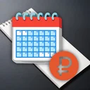
АвансСколько придёт аванс и какого числа: расчёт аванса и остаткав RuStore- ОтпускныеОтпускные: сколько заплатят и в какой деньв RuStore
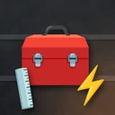
СечениеСечение кабеля по мощности: таблица ПУЭ и автоматв RuStore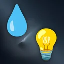
СчётчикиСчётчики: сколько намотало и когда передатьв RuStore- ДоплатыДоплаты: переработка, ночные и праздничные по ТКв RuStore
Здоровье. Записи для себя и для врача.
- Дневник пищеваренияДневник питания и симптомов: связь между едой и самочувствиемв RuStore
- Дневник болиДневник головной боли: сколько дней в месяц болит и что помоглов RuStore
- Звуки для снаСвой микс из двух звуков и таймер — под что вы засыпаете сегодняв RuStore
- ГлотокТрекер воды: считает норму и напоминает, пока вы её не выпьетев RuStore
- РитмТрекер привычек: пропустили день — серия не сгорит, есть пропускв RuStore
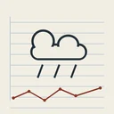
Дневник настроенияОтмечайте день погодой — через месяц видно, что портит настроениев RuStore
Дом. Мелкие вопросы каждого дня.
- Расписание уроковКакой сейчас урок и сколько до звонка. Расписание уроков и звонковв RuStore
- Сканер QRКуда на самом деле ведёт QR-код: показывает узел и ловит подделку адресав RuStore
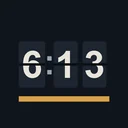
Будильник с заданиемПросыпаете будильник: выключится только после задания, не свайпомв RuStore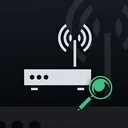
Проверка Wi-FiКто ещё сидит в вашей сети: сколько устройств отвечает прямо сейчасв RuStore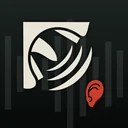
ШумомерСколько децибел у вас дома и превышает ли это норму для дня и ночив RuStore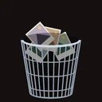
Чистка галереиСколько гигабайт освободят дубли и скриншоты — считает до удаленияв RuStore- Список покупок с бюджетомСписок покупок с бюджетом: сколько уже в корзине и сколько осталосьв RuStore
- Что на ужинРецепты на ужин: что приготовить сегодня из того, что есть домав RuStore
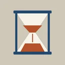
Таймер для кухниНесколько блюд сразу: что снимать следующим и через сколько минутв RuStore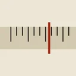
Конвертер всегоВведите одну величину — сразу все единицы семейства, офлайнв RuStore
Природа и небо. Когда выходить и куда смотреть.
- Карта мест — сквозь туманСколько процентов района вы прошли пешком — карта открывается шагамив RuStore
- КлёвНародный лунный календарь рыбалки: когда стоит быть на воде. Без интернета.в RuStore
- Звёздное небоКарта звёздного неба над городом: 5080 звёзд, созвездия, красный режим.в RuStore
- Солнце и лунаВосход, закат, золотой и синий час, фазы луны для 89 городов России.в RuStore
Коллекции. Чего не хватает в альбоме.
Фото и музыка. Плёнка и строй.
Игры. Одна задача на день — общая для всех.
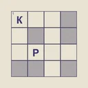
Кроссворд дняКроссворд дня: одна сетка для всех, подсказка правит неверную буквув RuStore- Слово дняУгадайте слово из 5 букв за 6 попыток — одно слово дня для всехв RuStore
- Нонограммы — японские кроссвордыЯпонские кроссворды: нить, узелок и чистое поле — три состояния клеткив RuStore
- МаджонгДоска дня — одна для всех: серия дней подряд и пять раскладокв RuStore
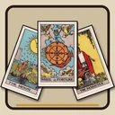
Гадание дняОдин расклад в день, одинаковый для всех — и что он значит сегодняв RuStore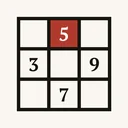
Судоку дняСудоку на каждый день без интернета: лёгкая, средняя и сложнаяв RuStore- Пасьянс дняКосынка без интернета, с крупными картами: один расклад дня для всехв RuStore
Коротко. Три вопроса.
- Сколько это стоит?
- Каждое приложение работает бесплатно, с рекламой. Один ролик на 30 секунд открывает все функции и убирает рекламу на сутки. Покупать ничего не нужно и нельзя.
- Где мои записи?
- Только на вашем телефоне. Регистрации и аккаунтов нет.
- Как связаться?
- leonard.abramov888@gmail.com